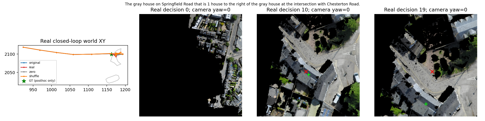
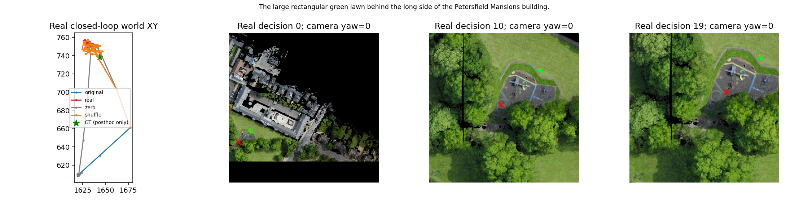
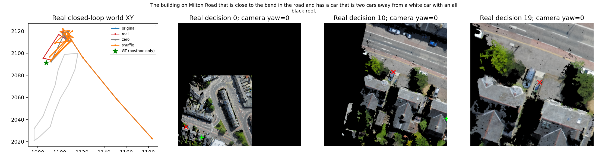
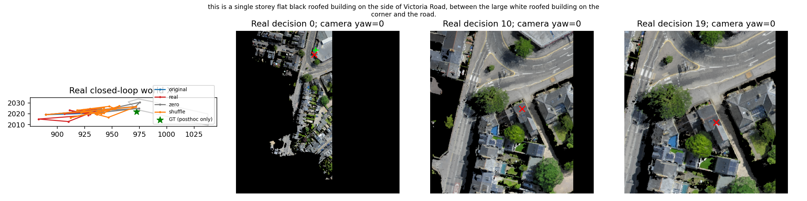
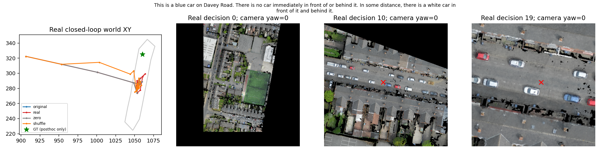
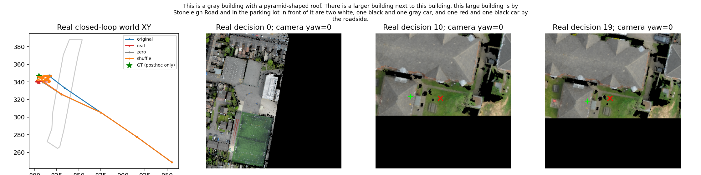

TRAIN 14344
The gray house on Springfield Road that is 1 house to the right of the gray house at the intersection with Chesterton Road.

绿色是事后GT世界点投影，不是人工像素框；红叉是当时Goal。RGB由真实决策位姿确定性重建，相机yaw=0，未使用教师轨迹。采样仅限实际发生观测的决策时刻，不包括horizon后未决策的最终位置。没有将这些GT标记输入模型。
The gray house on Springfield Road that is 1 house to the right of the gray house at the intersection with Chesterton Road.

The large rectangular green lawn behind the long side of the Petersfield Mansions building.

The building on Milton Road that is close to the bend in the road and has a car that is two cars away from a white car with an all black roof.

this is a single storey flat black roofed building on the side of Victoria Road, between the large white roofed building on the corner and the road.

This is a blue car on Davey Road. There is no car immediately in front of or behind it. In some distance, there is a white car in front of it and behind it.

This is a gray building with a pyramid-shaped roof. There is a larger building next to this building. this large building is by Stoneleigh Road and in the parking lot in front of it are two white, one black and one gray car, and one red and one black car by the roadside.
